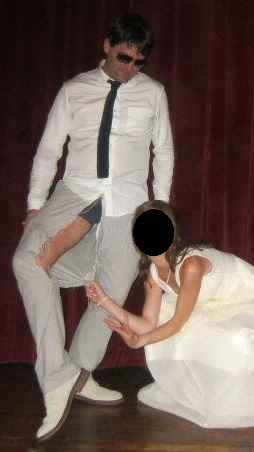

Because it’s been a little while since the Hun Percenters checked in with you fine folks in Bloglandia, we thought we’d toss up a quick update to give you a little peek into the daily conversations that are taking place between Matt, Ian, and myself. As always, remember to follow us on twitter (@ilathepun), and stay tuned for more details about our fundraising efforts (which we should probably get around to taking care of at some point instead of writing pointless blog entries).
Top 10 Quotes – Planning Committee Edition
1. “I’ve been doing pilates in my tuxedo to acclimate myself to this very situation. It ripped.”
Ian explains to the group how he is training for a trip that will include both formalwear and high altitudes. It should noted that this is not the first time that Ian has ripped a suit.

2. “Our bad-ass route is looking increasingly pedestrian.”
Ian, upon discovering that the Pamir highway has been both biked and hitchhiked in the past. Matt and I were quick to question the use of the word “pedestrian”.
3. “So apparently my visas won’t be ready in time for them to get my passport back to me until the end of June or early July.”
Will this trip actually happen? Stay tuned to find out!
4. “What the **** do we say to this dude? He’s not documenting **** from Berlin.”
I think this speaks for itself.
5. “I followed the entire thing on Google Earth, and it appears to be in great condition — there are farms and villages and other cars and ****. But we need to make sure it’s not under the control of some evil warlord.”
See, Mom? We’re taking all the necessary precautions.
6. “This was a completely arbitrary move on my part.”
This is the official theme of the trip. We should probably get it on a bumper sticker.
7. “What are the chances that we actually do have to ghost-ride the whip? I’m certainly not ruling it out as a possibility.”
Any excuse to post the clip of Marshawn Lynch on the injury cart.
8. “Medium-to-high.”
The only correct answer to #7.
9. “The re-route is quite simple. Short diversion from the Pamir into the Wakhan Valley for a couple hundos.”
In addition to the word “pedestrian” (see #2), Ian might not understand what “simple” means.
10. “Whelp, looks like this is actually happening.”
Yup.
Fondly,
Jon, Ian, and Matt